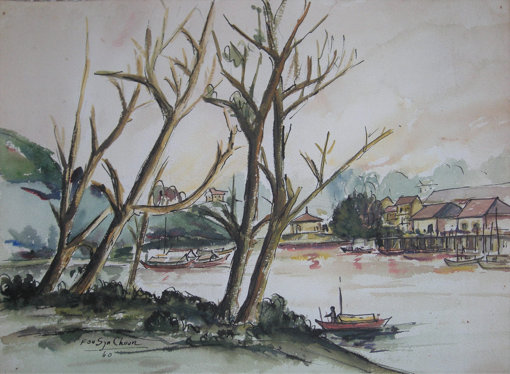

Foo Syn Choon
1933 – 2013
Artist Biography
Foo Syn Choon was a Sarawak-based artist, considered one of the pioneers of art in that region of Malaysia. Foo began sketching in the early 1950s at Batu Lintang Teacher Training College and went on to teach at primary and secondary schools in Kuching from 1955-1988. His artistic talent was recognised and in 1965 the Sino-British Fellowship Trust paid for him to spend a year at Bath Academy of Arts, Corsham where he obtained a diploma. His first major solo exhibition was in 1972 in the Netherlands, displaying batiks. He went on to show in Brunei, Singapore, England, Australia, Canada and China. He worked in various media but from the mid-1990s concentrated on Chinese ink on paper. Foo was a member of the Society of Chinese Artists and a major exhibition was held at Sarawak Art Museum in Kuching in 2008 honouring Foo and five others as ‘Sarawak’s First Generation Fine Art Artists’, representing the “starting point of the history of fine arts in Sarawak”.

Untitled, 1960